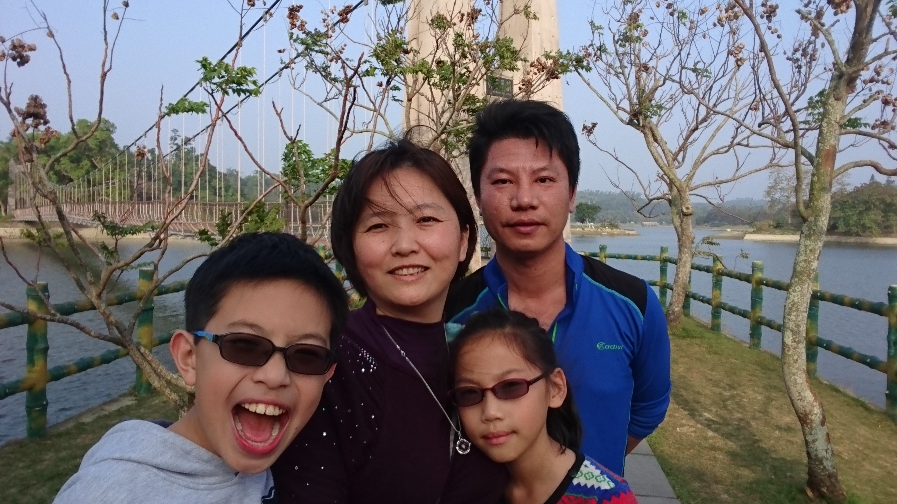
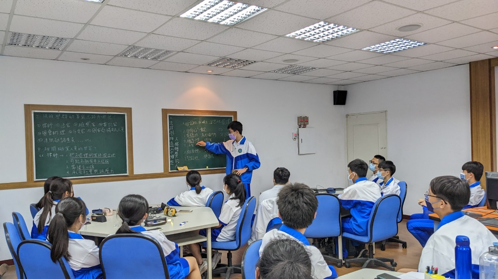

幸福美滿的家
家庭背景：🏠Sweet Family🏠
我出生在一個幸福美滿的小康小家庭，一個給我情感或物質所需的家。
我的父親在台塑企業工作，身為輪班職員，他生活時間常與我們錯開，但對他來說，養活一家四口是自己的責任。
在我沒事時，他會與我閒談國學常識或鑽研數學問題。因為父親，我學到學習從來不是一件苦事，而是在汲取知識的同時，在「發現」的過程獲得樂趣。
母親在我生命中扮演了最重要的角色。如果沒有母親，我的人生會走向一條完全相反的路。
在我出生時，腸病毒與SARS才剛剛震撼了全台灣，母親為此特地辭去了工作全心照顧我。
她令我了解到，原來生命的意義不只是成就自己，而在於成全更多的人。
我有個與我相差一歲的妹妹，是我兒時的玩伴，也是一起學習、相互依靠的良友。

努力朝夢想前進!
個人特質：乘著夢想飛行的我✈
我喜歡邏輯分析、深思熟慮、有系統地解決問題、會去觀察別人做事的方法，如研究機械構造、執迷於數學問題。
我也喜歡尋找生活中的美，如夕陽的豔麗溫柔。
因此，我熱愛電腦資訊，因為在四方的螢幕框架中，我能夠藉由一行行程式碼組織出無限廣闊的世界。
無關於道德的是非對錯時，我有時會猶豫不決，不喜歡頻繁的人際活動。我會盡力讓自己找到笑容。
我覺得夢想是極其重要的。對我而言，活著的意義是讓每一天都在為未來的某個時刻做準備。
因此面對困難時，因為夢想的使命感，我會努力去嘗試能所有幫助我圓夢的事情。
表達能力的培養
求學歷程：Just do it！
國小的時候，我本來是一個害羞不愛說話的人。
但是經由參與大量的英語說故事比賽、國語演說以及讀者劇場比賽，培養了我在眾人面前說話的能力。
國中的時候，為了會考拚命的那段日子，則讓我了解到了時間管理的重要性，尤其那年我們在疫情的衝擊下必須要線上上課，如果自制力不足，很容易就浪費了國中生涯。
高中的時候，我開始製作科展與小論文，有些東西一開始看起來很難，但在深入研究後，
我才了解到「不會的事，做了就會了；不做的事，永遠都不會」的道理。